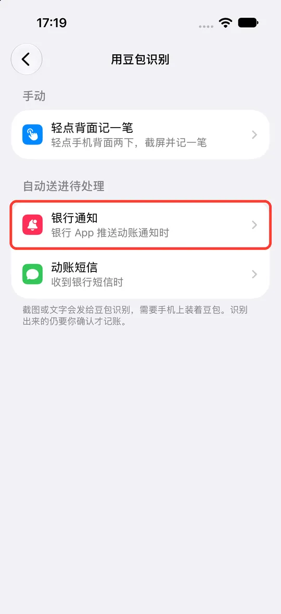
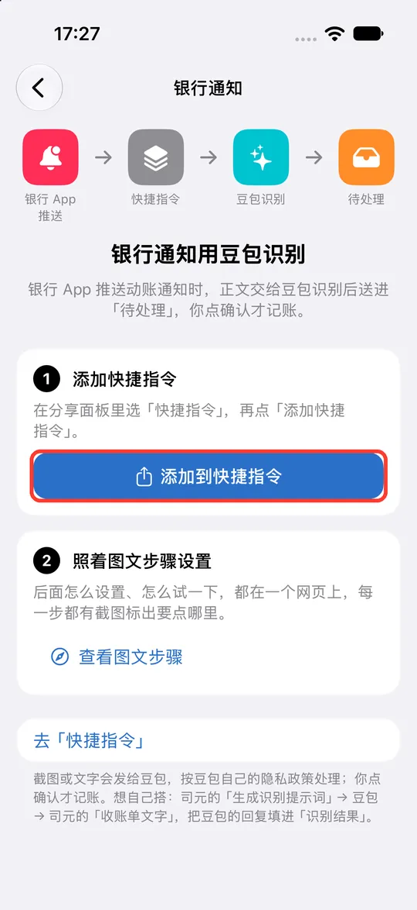
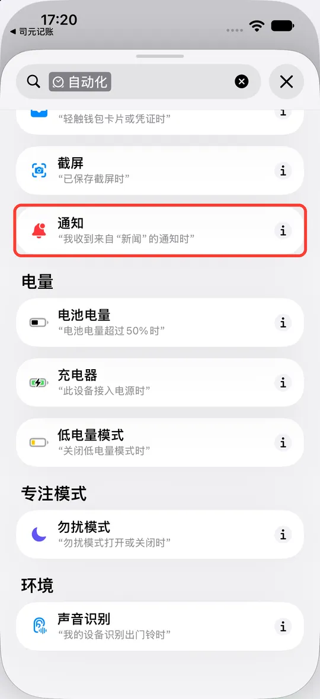
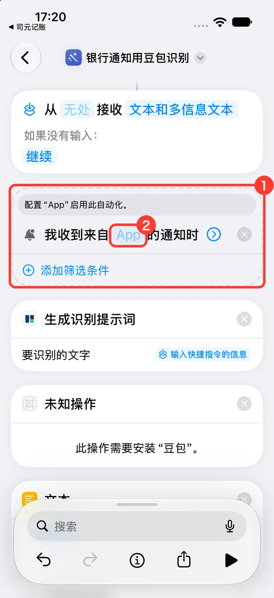
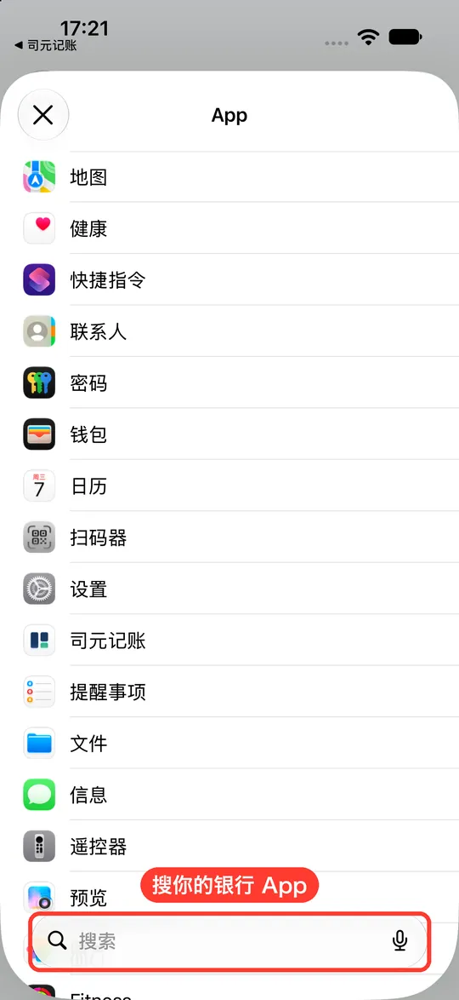
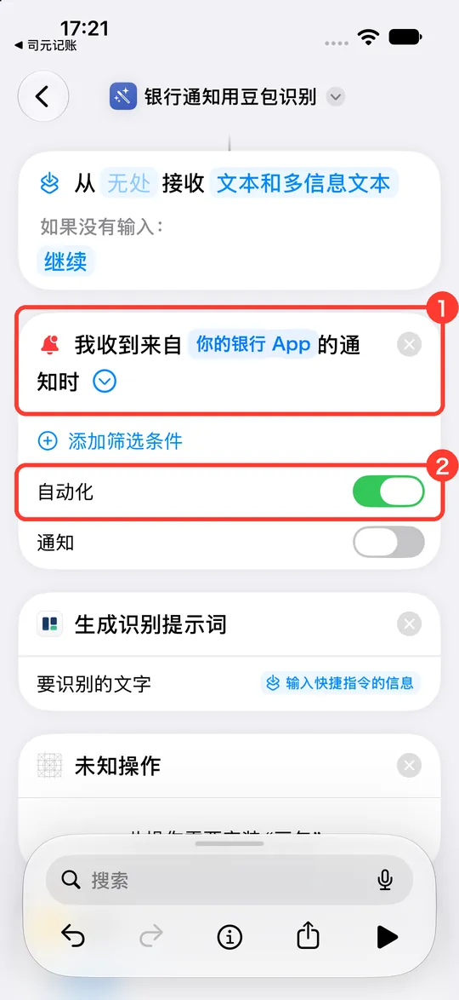

银行通知用豆包识别
银行 App 推送动账通知时，快捷指令自动把通知正文交给你手机上的豆包识别，结果送进司元的「待处理」。你点确认才会记账。
要准备的
- iOS 27
- 司元
- 豆包（App Store 免费下载，登录一次）
- 银行 App，并打开了它的动账通知
「收到通知时运行」是 iOS 27 才有的，iOS 26 用不了。银行短信能收到的话，「动账短信用豆包识别」更省事，iOS 26 也能用。
-
把快捷指令装进来
-
打开司元，点右上角的齿轮 › 「助手、Siri 与快捷指令」 › 「用豆包识别」 › 「银行通知」。

-
点「添加到快捷指令」，在弹出的面板里点「快捷指令」，再点「添加快捷指令」。

添加好以后会直接打开这条快捷指令「银行通知用豆包识别」的编辑页，接着做第 2 步。
-
-
让它收到银行通知就运行
-
在编辑页点底部的「搜索」，点「自动化」，往下翻，在「通信」下面点「通知」。

-
快捷指令里多了一块 ①「我收到来自 App 的通知时」，点里面浅色的 ②「App」。

-
在列表里找到你的银行 App，点一下选中。找不到就在底部搜索框里搜它的名字。

-
① 触发条件里显示了你的银行 App，点「时」右边的小箭头展开；② 确认「自动化」是打开的（默认就是）。下面的「通知」开关是运行时要不要提醒你，开关都行。点左上角返回，自动保存。

截图用的手机没装银行 App，这里写的「你的银行 App」处会是你选的那个 App。
-
-
先手动运行一次
在「快捷指令」里点一下「银行通知用豆包识别」卡片右上角的三角形，系统问能不能使用司元、能不能使用豆包，都点「允许」或「始终允许」。这次没有通知内容，后面的报错直接关掉即可。
-
收到通知后去确认
银行 App 推送动账通知后，打开司元，首页「待处理」里会多一条。点进去核对金额、时间、商户，确认后才会记进账本。


常见问题
收到通知了，但待处理里什么都没有
- 银行 App 的通知要在「设置 › 通知」里是打开的；只在 App 里能看到、手机上没弹出来的不算。
- 确认第 3 步手动运行过一次，并且都点了允许。
- 有的银行把动账提醒放在短信、不推 App 通知，那就改用动账短信那条。
银行 App 的营销推送也被送进来了
它们也会进「待处理」，但你不确认就不会记账，在待处理里删掉即可。嫌多的话，可以在银行 App 里把营销推送关掉、只留动账提醒。
发给豆包的是什么
通知正文，以及你在司元里的收支分类名称（让豆包按你的分类归类）。你的账户名称和账本内容不会发出。豆包怎么处理这些内容，以豆包的隐私政策为准。
不想用了
在「快捷指令」里删掉「银行通知用豆包识别」这条快捷指令即可，司元里的账不受影响。